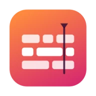
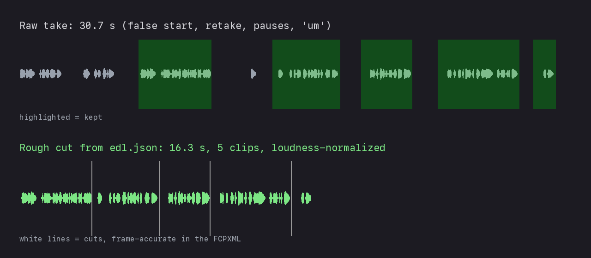
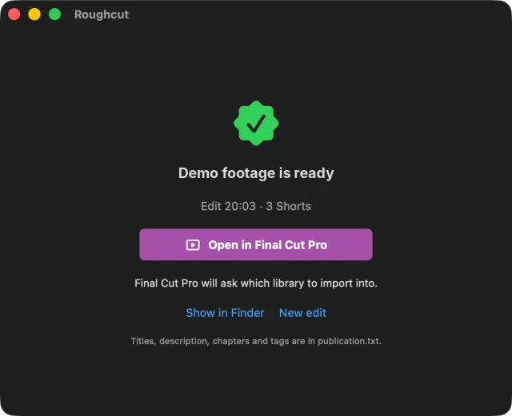

01 · Video editing

Roughcut
Turns a folder of footage into a rough cut in Final Cut Pro.
Drop a folder on the window and press Edit. Whisper transcribes every word with its timestamp on the Mac, then a language model of your choice picks the takes. The scripts turn its cuts into a frame-accurate FCPXML timeline that comes with subtitles and up to three vertical Shorts. Each timeline is checked against the DTD that ships inside Final Cut Pro before it's imported.
Real test: 47 min of 4K vlog footage became a 22-min rough cut and three Shorts in 31 min.
- Swift
- Python
- whisper.cpp
- ffmpeg
- FCPXML

